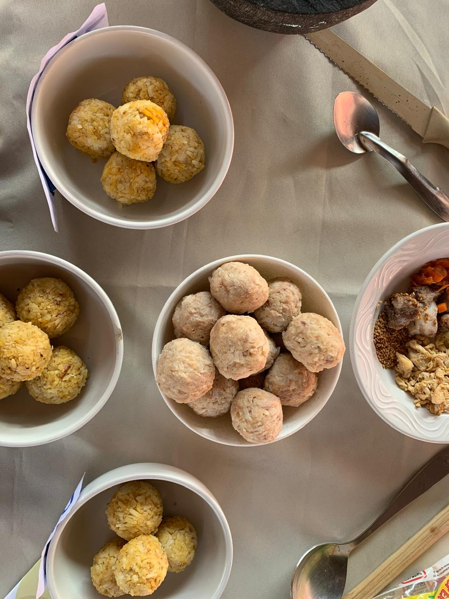

Comida saludable · Tizayuca
Arrozaki nace del compromiso con lo natural. Ingredientes frescos, preparaciones honestas, sabores que permanecen.
Historia
Healthy Bites Arrozaki surgió de una idea simple: demostrar que comer bien no debe sacrificar el placer. Cada receta nace de una búsqueda honesta de ingredientes locales y técnicas que respetan los alimentos.
Desde nuestros inicios en Tizayuca, hemos construido una comunidad alrededor de la mesa — un espacio donde la salud y el sabor no se contraponen, sino que se potencian mutuamente.
